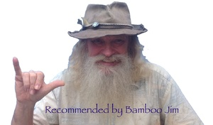

The good life in Saipan
First off, let me tell you that I appreciate life on an island in the tropics with fabulous sunsets and a five mile Hot-Tub. Beaches. Gorgeous sky, Green beyond belief.
 I am healthy, fit, have all my creature comforts in budget. I sip coffee, eat crepes and give Tarot card readings at the bamboo palace known as The Shack here in Saipan. I have embraced my inner Nikola Tesla and am inventing things. People here are very mellow, as are all my contacts, including you.
I am healthy, fit, have all my creature comforts in budget. I sip coffee, eat crepes and give Tarot card readings at the bamboo palace known as The Shack here in Saipan. I have embraced my inner Nikola Tesla and am inventing things. People here are very mellow, as are all my contacts, including you.
That is rather different than the debt ridden impoverished life I had in Portland, OR. Here I am simply debt ridden and nearly poverished. A vast improvement.
So far, that’s the good life. A very good life. But I can step back and see a larger picture of this tropic island. It has an interesting set of problems.
Problems? Here?!!??
Saipan was totally devastated by WWII. Flattened, vegetation gone. The US Army rounded up all the locals and put them in a concentration camp on the south of the island. Up until the 70’s the whole northern end of the island was CIA training grounds for our Vietnam war. Off limits.
But the locals are pretty much used to being dominated. The Spanish “depopulated” Saipan’s original Chamorros from the 1500’s onward. The Carolinian islanders fared better, because they sailed faster than the Spanish, and like ocean nomads, came and went here in Saipan. The Japanese years were better economically if not independently for the islanders, and Saipan had a thriving sugar economy. Including a railroad. Post-war, however, Hawaii was far more important to the US for sugar, and Saipan’s sugar based economy was gone. Aloha ‘Oe.
The current population is a mix of Chamorros, Carolinians, Philipinos, with other island groups as well as Thai, Japanese, Korean, Chinese, Russian, Bangladesh and Pakistani residents. And most wanting to be here simply because it is part of the USA. The fabled land of opportunity. And right now, it pretty much is a fable.
There are still live munitions from WWII under the beaches and in the hills. Really old and duds… mostly. The US ecological remediation was to plant an invasive, useless, but fast growing tree: Tangan Tangan. They grow so thick and fast, that the jungle is pretty much impenetrable unless you have a tank. And don’t think of doing that, since there are a few birds that are valued only for being “few.” If the US Government wanted to mount a Denial of Service attack on local development, it would look exactly like this.
The local tribes had lost their independence 500 years ago, the sugar industry gone, and valuable vegetation now replaced by useless Tangan Tangan. Except for the wonderful local farmers, the land is nearly unused, and impenetrable in it’s current state.
The post-war US Government however, boosted the economy simply by giving lots and lots of aid. And by installing our wonderful set of laws, bureaucracies and judicial system. The aid has dried up, but the laws remain. The result: doing major projects here is like pulling the Queen Mary with a motor scooter. Everybody yells at the driver.
Diamonds Discovered in San Jose!!
But there are diamonds at our feet. Enough to build a better Saipan. And a better world. Those diamonds are bamboo and Golden Bamboo Snow.
Bamboo grows wild and I get it for free from gracious local farmers. One year ago, I looked at one stick in my apartment and noticed tan dust on the floor under it. I picked some up and wondered what it was. I smelled the stuff, rubbed it on my hands and noticed that my hands were dry and smooth. Extra sensitive, too. And they stayed that way for about another hour.
I collected and sifted it, and asked several people to try it and give me their feedback. Nobody died. Nobody had a bad reaction to it. Everybody agreed that the sensation was real. I figured this could be a product for sportsmen. Or safecrackers.
I checked the internet for any information on this stuff, but surprise, surprise, NO information. Not from insect biology, plant studies, the bamboo industry, the chemical industry. Nothing. No one had ever described this stuff in even rudimentary detail. So I had to try everything I could think of to understand the magic of Golden Bamboo Snow.
Fast forward to August, 2014: I have found that there is abundant potential for MANY products based on Golden Bamboo Snow. Mostly I have tried these out on myself, with positive effects. It is 100% natural, and can be made without cash investment by anybody in the tropics with access to fresh bamboo.
Drum-roll Please…
Bamboo Snow is a water optional cleaner for hard surfaces like video screens, glass or cars. It never scratches. Even without water it cleans hands, skin, hair, fur and rugs. It sucks up grease and oil instantly.
When used without water, it simply clumps the dirt and oils and falls off. When used with water, it rinses off instantly and leaves everything squeaky clean. Hands, plastic, teeth, too. I use it in the shower. Golden Bamboo Snow can absorb up to three times it’s weight in oils, PLUS twice it’s weight in water, and turns it all into a putty that sticks together.
Things to avoid? Don’t breathe it: it is dust. we don’t breathe dust. If you get it in your eyes, flush it out with water.
Other Human reactions and long term side effects? Let me respond by reminding that bamboo snow has existed for tens of thousands of years. It has been in constant contact with any human that has lived in a bamboo structure. Bamboo has never, in all that time, been associated with any disease or allergy. Bamboo Snow is simply one component of bamboo, That is pretty strong evidence that there are no side effects, allergies or diseases caused by Bamboo Snow.
I tried something else: I put some in a pillow. Feels great and absorbs moisture: yes, we sweat in Saipan. And on airplanes: That could be useful when you travel, you know. I unintentionally put it to an extreme test: I had a one-day flu, you know the type, explosive everything. The pillow was the only thing that stayed dry and absorbent through the whole ordeal.
I could go on about other uses of Bamboo Snow, and believe me there are plenty. Each one deserving of it’s own industry. I have filed three patents with the US Patent Office, for this unique, new and ancient stuff. I just don’t want to run a business, though, it gets in the way of my Good Life.
A Greater Life — The success of others is my success, too.
But a Great Life would be to enable anyone on the island to run one of these businesses. Make another person’s life better and greater is the best challenge and reward, isn’t it? So, I am happy to run some pilot product and marketing tests, identify utility, and hand it off to someone in the local population to build real and sustainable business. The success of others is my success, too. Wearing my “Modern Marianas” hat, it has already assisted with plans and money for an independent project to make and sell Bamboo Charcoal.
I am forming a local cooperative of people with interest in bamboo and bamboo snow. It’s called Bamboo Can Do, and I will be licensing my patents pending at no cost to any member.
For global purposes, I am forming the Modern Marianas Foundation to administer the patents worldwide. The profits are to accrue to helping the economies of these island nations and “protectorates”. My own involvement will be minimal, as I do not want the “spoils of business”. I wish other people make the money. I just want a research lab with great views and bamboo where I can do what I do best: invent.
Help me with my goal of The Greater Life for others: A place where bamboo snow will help cleanliness and sanitation
while conserving water in places that grow bamboo in Africa, Asia, South America, Oceanea and even places without bamboo like North America and Europe. It’s like karma squared.
Help me with my goal of The Greater Life for others: to help Saipan be a thriving center of bamboo commerce. with products, crafts and technology that rivals the old days of prosperity from sugar cane. A place of a new home grown culture: America’s New Bali.
How can you help?
1) $$$$! funds are needed immediately for the legal filings for the cooperative, foundation as well as the Patent
Applications, The monetary goal is $10,000 with an urgent need for $1500.00 by August 15th. Funds are also needed for trial run products and marketing. As a business demonstrates profitability, my intent is to release it under an “open source” license to all members of the Modern Marianas Foundation or the Bamboo Can Do coop. Send your gifts to jim@bamboocando.com by way of paypal. All I can offer in return is founders membership. Whatever that involves. No loans: I Guarantee that I can't and won't repay.
2) Get some Golden Bamboo Snow. Try it out. Prove to yourself that it does what I say.
3) Join up! Volunteer any professional services: Organizational, managerial, marketing, web design, anything. I already have a full time Devil’s Advocate, so that spot is full.
Sincerely yours,
Bamboo Jim Hinds
Explorer and Inventor: Bamboo Snow
Founder, Bamboo Can Do, Modern Marianas Foundation.
Tarot Reader: The Shack, Saipan, MP, USA, World.
© 2018 bamboo can do cooperative.